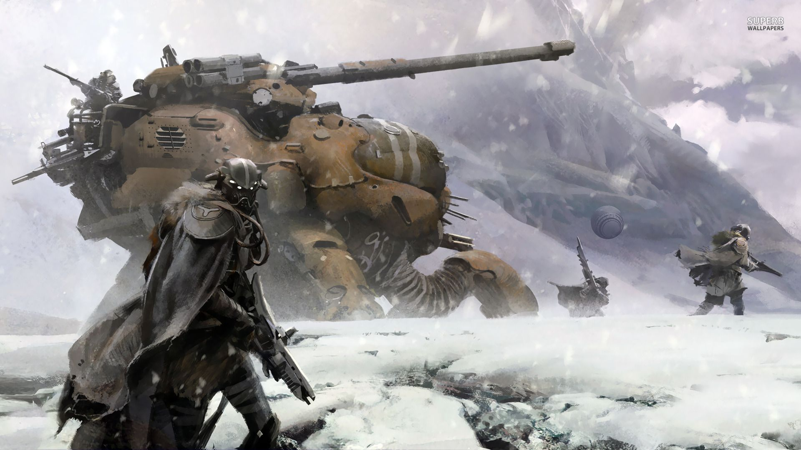
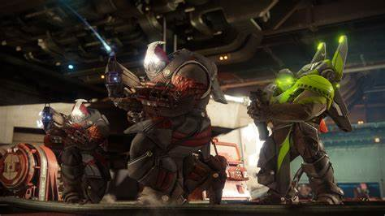
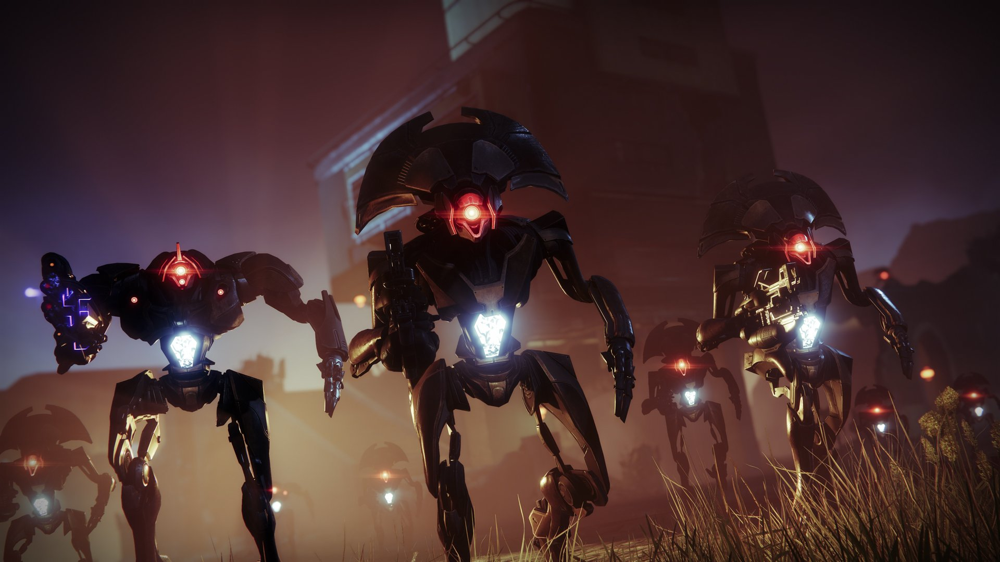
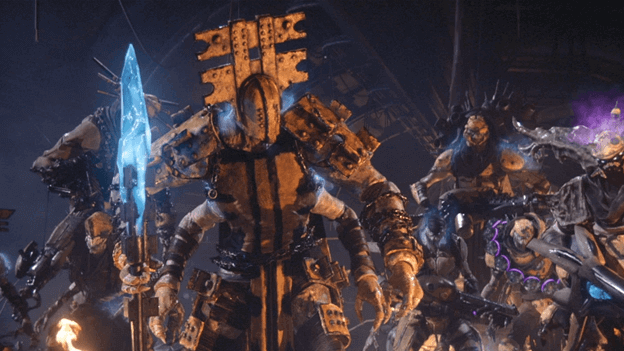
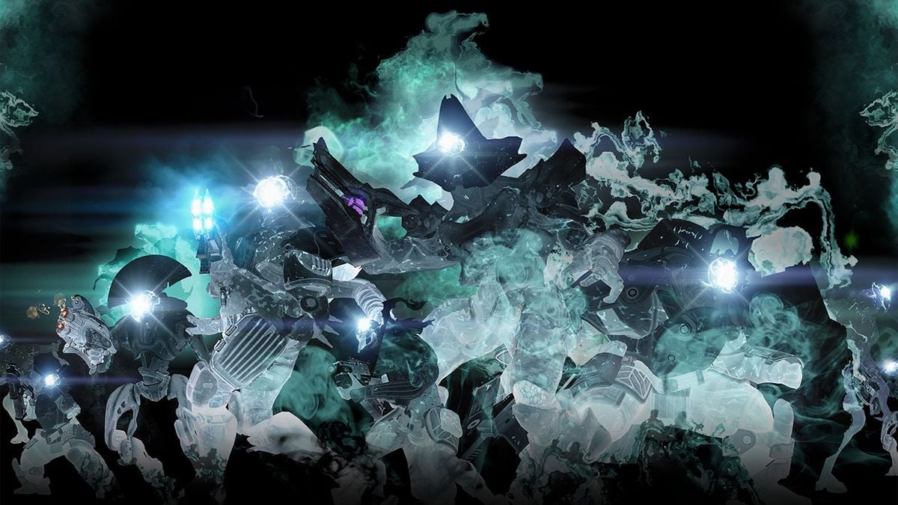

The fallen are one of the main types of enemies within Destiny 2. They are a nomadic race of alien scavengers who were once part of a powerful interstellar civilization known as the Eliksni. However, their civilization fell into ruin after a massive event called the Whirlwind, which left them scattered and pretty much destroyed. They can be characterized by their almost insect like features with multiple arms and glowing eyes, and they are divided into various houses, each with its own leadership and societal structure. Some of the major Fallen houses include the House of Devils, House of Wolves, House of Dusk, and House of Kings.
Next on the list is the race known as the Cabal.The Cabal are a formidable militaristic alien empire featured prominently in the Destiny universe. They are known for their immense size, advanced technology, and ruthless expansionist tendencies. Originally hailing from a distant empire outside the solar system. Physically, the Cabal are large, heavily armored creatures with a reptilian or rhinoceros-like appearance. They are characterized by their huge stature, thick armor plating, and powerful weaponry. Despite their brutish appearance, the Cabal are highly disciplined and organized, operating under a strict hierarchy led by powerful military commanders.
The Vex are an enigmatic and ancient race of time-traveling robots featured prominently in the Destiny universe. They are one of the most mysterious and complex factions in the game, with origins and motivations that go far beyond traditional understanding. Physically, the Vex are mechanical entities composed of some sort of network of radiolarian fluid, metal, and energy. They typically appear as humanoid figures with glowing cores and intricate designs, often incorporating elements of ancient architecture and machinery.
The Scorn are a faction of enemies introduced in the Destiny 2 expansion "Forsaken." They are not a traditional alien race like the Fallen or Cabal but are instead a twisted and corrupted version of the Fallen. The Scorn were created when the Fallen House of Exile, under the leadership of the Fallen named Fikrul, was subjected to a dark and mysterious process known as "Dark Ether infusion." Physically, the Scorn resemble the Fallen but show signs of heavy mutations and enhancements. They often appear more aggressive and chaotic in their behavior, with some members sporting additional appendages or distorted features. The Scorn are divided into various subtypes, including Screebs, Ravagers, and Lurkers, each with its own unique abilities and combat style.
The Taken are an enemy faction introduced in the Destiny series, initially appearing in the "The Taken King" expansion for Destiny and continuing to play a significant role in Destiny 2. They are a twisted and corrupted version of various enemy races, including the Fallen, Hive, Cabal, and Vex, who have been taken and transformed by the dark powers of the Taken King, Oryx. The Taken are a formidable enemy faction introduced in the Destiny series, initially appearing in the "The Taken King" expansion for Destiny and continuing to play a significant role in Destiny 2. They are a twisted and corrupted version of various enemy races, including the Fallen, Hive, Cabal, and Vex, who have been taken and transformed by the dark powers of the Taken King, Oryx. Physically, the Taken show eerie and otherworldly appearances, with dark, shadowy auras and distorted features. They are characterized by their unnatural movements and abilities, often employing powerful void-based attacks and teleportation. The Taken come in various forms, with each enemy race's units taking on new abilities and tactics after being Taken.
